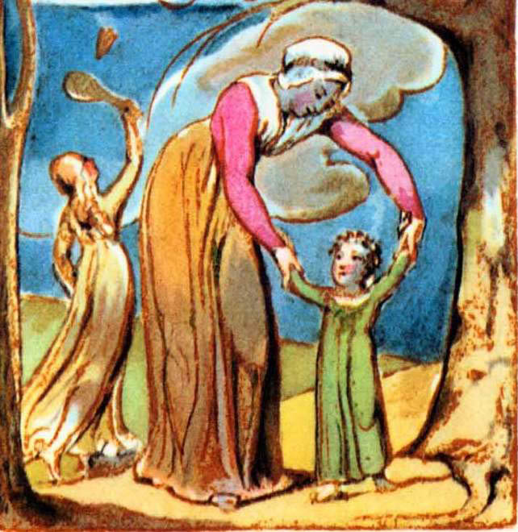

Küçük sinek, Eğer düşünce dirimse
El çırpar yazların, Ve direnç ve nefesse,
Dikkatsiz elimse Ölümdür
Dokunur geçer. Yokluğu düşüncenin.
Bir sinek değil miyim Öyleyse ben, mutlu
Ben de senin gibi? bir sinek miyim,
Ya da bir insan değil misin Yaşayayım,
Sen de benim gibi? Ya da öleyim.
Zira dans ederim,
İçip şarkı söylerim,
Kör bir el kanatlarıma
Dokununcaya kadar.
